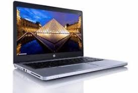
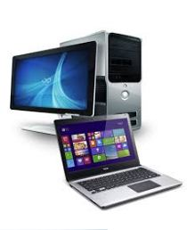

| Desktop es un equipo de escritorio, es un tipo de computadora
personal que se usa en un sitio fijo donde se pueden colocar todos sus componenter como mouse, monitor,
bocinas, bateria, perifericos externos, etc. se utilizan en las actividades cotidianas,
ya que puedes encontrarlas en una caja registradora, en hospitales, en bancos
y en escuelas.
|
Desktop y Laptop |
La desktop y laptop esta formada por componentes esenciales como El hardware son los componentes físicos
Sistema operativo encargado de administrar el hardware Programas: encargados de cumplir tareas específica. |
 |
|  |
|
otros componentes importantes en laptops y desktop pero el principal de la computadora es el procesador,
encargado de ejecutar todas las instrucciones, Por otra parte, la placa de red, que puede del tipo con cable o Wi-FI con una antena, es en la
actualidad uno de los más importantes componentes de la computadora |
Marcas de Laptop y Desktop:
- DELL
- HP
- SAMSUNG
- ASUS
- TOSHBA
- LENOVO
|